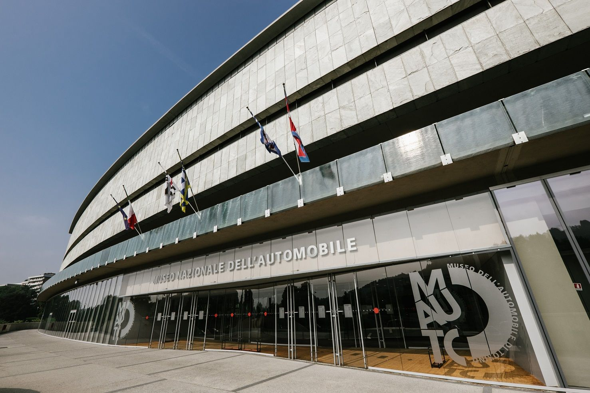
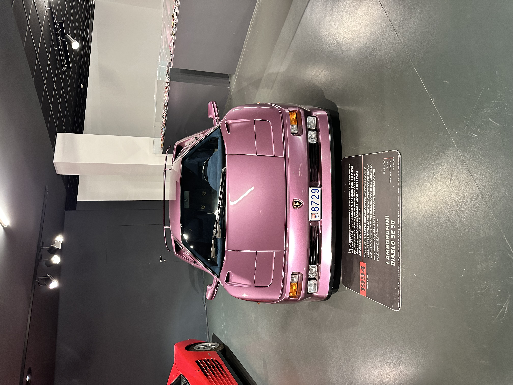

Szuper autók.
Ahol a történelem életre kel.

A zarándoklatunk egyik legizgalmasabb világi állomása a Museo Nazionale dell'Automobile volt. Itt nemcsak az olasz autógyártás (mint a Fiat és a Ferrari) történetébe láttunk bele, hanem a technológia és a formatervezés fejlődését is végigkövettük. A gyűjtemény több mint 200 autót számlál a legelső gőzgépektől a futurisztikus koncepcióautókig.

A gyűjtemény egyik ékköve.
Csoportkép